4.2 Monitoring Ovulation in Natural Cycles and Follicular Development in Ovarian Hyperstimulation
Ovulation disorders are a common cause of female infertility. Transvaginal ultrasound is a valuable tool for assessing the location, size, morphology, development, and maturity of the developing follicles and monitoring the proliferation of the endometrium. When diagnosing infertility, it is essential to monitor ovulation in patients. Additionally, the presence of well-developed follicles, a receptive endometrium, and appropriate guidance on the timing of intercourse can enhance the chances of pregnancy. Ultrasound monitoring of ovulation is a key aspect of reproductive medicine that all clinical practitioners should be proficient in.
4.2.1 Ultrasound Monitoring of Ovulation in Natural Cycles
1. Prediction of ovulation and timing of follicle monitoring
In patients with regular menstrual cycles, antral follicles ranging from 2 mm to 7 mm in diameter can be observed in both ovaries between days 3 and 5 of the menstrual cycle. Among the recruited follicles, the one most sensitive to FSH (with the lowest threshold) becomes the dominant follicle, while the others undergo atresia. On day 6, the dominant follicle typically measures 7 mm to 8 mm in diameter. During the first half of the follicular phase, the dominant follicle grows at a rate of approximately 1 mm per day. After reaching a diameter of 10 mm, the growth rate accelerates to 2 mm per day. By day 12, the dominant follicle usually measures 16 mm to 18 mm in diameter.
A spontaneous LH peak occurs when the dominant follicle reaches 18 mm to 20 mm, followed by rapid follicular growth of 2 mm to 4 mm. The LH peak and the maximum follicular diameter typically occur almost simultaneously. By monitoring the size of the follicle and its growth rate from day 12 to day 14 of the menstrual cycle, we can predict the timing of the LH peak and ovulation. Ovulation generally occurs approximately 14 days before the onset of the next menstrual period. Thus,
ovulation can be estimated by counting 14 days backward from the first day of the next menstrual period for patients with regular menstrual cycles.
Follicular monitoring in patients with regular menstrual cycles can begin daily, starting 3 to 5 days before the anticipated ovulation date, to track the size, tension, maturity of the follicles and the occurrence of ovulation. In patients with irregular menstrual cycles, monitoring may start on day 8 of menstruation. When the largest follicle reaches a diameter of 8 mm to 12 mm, a follow-up ultrasound should be scheduled two days later. If the follicle grows to 12 mm to 14 mm, the next ultrasound should be conducted the following day. Once the follicle reaches a diameter of $ \geq $14 mm, daily monitoring is required until the follicle matures and ovulation occurs.
For patients with irregular menstrual cycles who cannot predict ovulation or frequently attend clinic visits for systematic monitoring, they may be advised to report to the clinic for ultrasound when they notice a clear, drawing-like vaginal discharge. This type of discharge is indicative of elevated estrogen levels and may signal an impending ovulation.
In irregular cycles, follicle monitoring can be done intermittently or continuously over an extended period, starting on day 5 of menstruation. Due to the unpredictable timing of ovulation and menstruation, extended monitoring may be necessary. Once an ovulation disorder is identified, ovulation induction therapy should be initiated in the subsequent menstrual cycle as part of the efforts to conceive.
Note: On day 4 of the menstrual cycle, antral follicles were observed in the ovaries, and the endometrium was thin. On day 8, the dominant follicle measured 8.8 mm in diameter, and the endometrium (triple line) was in the proliferative phase with a thickness of 7 mm. On day 12, the dominant follicle had grown to 12 mm in diameter, and the endometrium (triple line) was 9.2 mm thick. On day 15, the dominant follicle reached a diameter of 23 mm, the endometrium was 10.1 mm thick, and its morphological pattern was the transitional stage from triple line to homogeneous hyperechogenic. This change suggested the presence of an endogenous LH peak and a rising progesterone level, indicating that ovulation was likely to occur within the next 24 h. On day 16, the dominant follicle was no longer visible, and the endometrium had transitioned to a homogeneous hyperechogenic pattern, consistent with the secretory phase.
2. Preovulatory Image of the Mature Follicle
The mature follicle typically measures 18 mm to 28 mm in diameter, is round or oval in shape, and moves toward the surface of the ovary. One side of the follicle is not covered by ovarian tissue and protrudes outward. Under ultrasound, if the follicle appears clear, smooth, and tense, with a dark, echo-less area and good translucency, it suggests that ovulation will occur within 24–48 h. The presence of the cumulus oophorus (a dot-like hyperechoic structure) on the inner wall of the follicle indicates that ovulation is imminent.
During the follicular phase, as the follicle grows, estrogen levels rise, causing the endometrium to thicken. At this stage, the endometrium is primarily influenced by estrogen, and its morphological pattern is a “triple line sign.” As the follicle matures, the first estrogen peak triggers a positive feedback loop on the hypothalamic-pituitary-ovarian axis. This results in an LH peak and a small amount of progesterone begins to be produced, causing the endometrium to transition from triple line to homogeneous hyperechogenic (Fig. 4.9).
Ovulation is a sudden event and is difficult to capture with ultrasound. By combining ultrasound images of the follicle with peripheral blood hormone tests, we can estimate the timing of ovulation, helping guide the patient for intercourse aimed at conception. In some cases, observing the exact moment of ovulation during egg retrieval in an IVF procedure may be possible.
3. Postovulatory Ultrasound Imaging Features
Postovulatory ultrasound imaging features (Fig. 4.10) include the following:
(a) Sudden disappearance of the mature follicle: After ovulation, the mature follicle will suddenly disappear from the ultrasound image.
(b) Significant shrinkage of the mature follicle: The mature follicle shrinks significantly, with blurred walls, irregular morphology, and uneven internal echogenicity.
(c) Formation of corpus hemorrhagicum: Following ovulation, the follicular wall collapses, and small blood vessels covering the follicle rupture, causing blood to flow into the follicular cavity. This results in a cystic structure known as corpus hemorrhagicum, which typically lasts for about 72 h. It is generally filled with non-clotting blood and few blood clots. Ultrasound imaging shows fine, dotted echogenicity within the cyst. The corpus hemorrhagicum eventually develops into the corpus luteum. While the corpus hemorrhagicum is usually no larger than the original follicle, if bleeding occurs within the corpus luteum cavity, the diameter may exceed that of the normal corpus hemorrhagicum, forming a corpus luteum hematoma.
(d) Presence of follicular fluid in the pelvic cavity: As the follicular fluid is discharged, a dark fluid area may appear around the ovary or in the recto-uterine pouch, indicating the completion of ovulation.
4. Ultrasonographic Features and Diagnosis of Undeveloped Follicles
The absence of a dominant follicle in both ovaries, accompanied by multiple small follicles and a thin endometrium or proliferative endometrial changes (due to low estrogen levels), suggests a high likelihood of undeveloped follicles in the current menstrual cycle. However, it is important to differentiate this from ovarian images where ovulation has already occurred but without clear signs of ovulation. A more accurate diagnosis can be made through peripheral blood estrogen and progesterone tests:
(a) Low levels of both estrogen and progesterone indicate that no follicles have developed in the current cycle (except in cases just before the menstrual period of the next cycle).
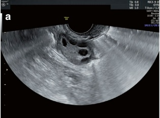
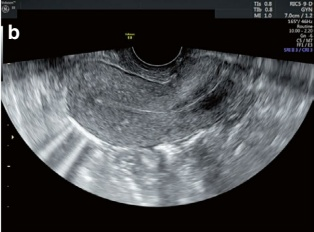
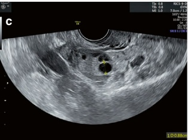
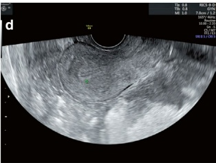
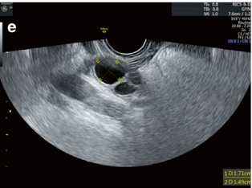
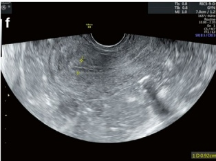
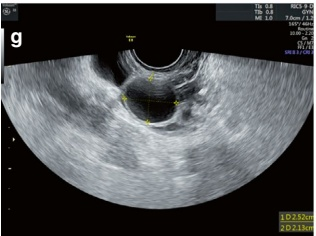
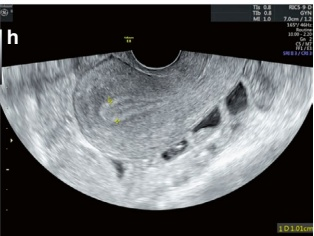
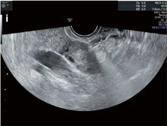
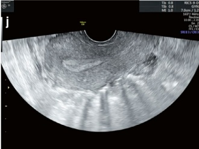
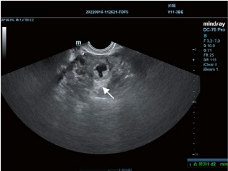
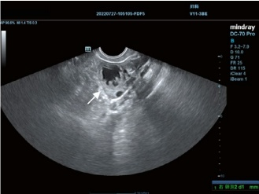
(b) Progesterone >3 ng/mL suggests that ovulation has already occurred in the cycle.
(c) Progesterone >1.5 ng/mL, with a slight increase in estrogen, does not exclude recent ovulation. This suggests that progesterone is beginning to rise while estrogen decreases due to the expulsion of follicular fluid. To confirm the diagnosis, blood estrogen and progesterone levels should be rechecked after 3 to 5 days:
A continuous rise in progesterone indicates that the ovary has entered the luteal phase, confirming ovulation.
Little to no change in estrogen and progesterone suggests a high likelihood of follicular development failure in the current cycle.
If there is no dominant follicle in both ovaries but the endometrium is thickened with typical secretory changes (homogeneous hyperechogenic endometrium), it suggests that ovulation is more likely to have occurred in the current cycle, based on the patient's menstrual history. This can be further confirmed by blood estrogen and progesterone tests.
- Luteinized Unruptured Follicle Syndrome (LUFS)
LUFS is defined as a mature follicle that does not rupture within 48 h after the LH peak. LH stimulates the granulosa cells in the follicle to luteinize and begin secreting progesterone. A range of clinical manifestations similar to those observed during a normal ovulatory cycle can occur due to the effects of progesterone. These include secretory changes in the endometrium, a biphasic basal body temperature, cervical mucus exhibiting normal ovulatory changes, and a regular menstrual cycle—leading to a false impression that ovulation has occurred. However, in LUFS, normal fertilization cannot occur despite the presence of an unruptured follicle.
The pathogenesis of LUFS is primarily attributed to a combination of endocrine and mechanical factors. Endocrine factors include dysfunction or deficiency of prostaglandin synthetase in the ovary, a diminished LH peak, insufficient progesterone secretion during peri-ovulation, hyperprolactinemia, or abnormal pituitary function [27]. Mechanical factors include pelvic adhesions, endometriosis, and thickening of the tunica albuginea, which can prevent follicular rupture [27]. Medically induced LUFS may also occur due to clomiphene-induced ovulation (as the anti-estrogenic effects of clomiphene lower LH peak levels) or incorrect timing of the hCG trigger.
The diagnosis of LUFS is primarily based on ultrasound monitoring. However, it must be differentiated from a corpus luteum or hemorrhagic corpus luteum. In terms of the course of events, LUFS lacks the obvious postovulatory signs seen in a corpus luteum or hemorrhagic corpus luteum. Therefore, daily ultrasonography should be performed a few days before ovulation for differential diagnosis. A normal corpus luteum is characterized by significant shrinkage or disappearance of the mature follicle, followed by enlargement during ovulation. In contrast, patients with LUFS experience no ovulation, with rapid and continuous enlargement of the follicle (without rupture). Hemorrhagic corpus luteum typically arises on the seventh to eighth day after ovulation, as luteal function peaks at this time, making luteal vessels prone to rupture and causing intracystic hemorrhage. Thus, hemorrhagic corpus luteum often occurs in the mid-luteal phase, secondary to trauma or strenuous physical activities (Fig. 4.11).
However, continuous daily monitoring can be challenging to implement in clinical practice. In some patients who develop a luteinizing cyst after ovulation, distinguishing between a corpus luteum formed after ovulation and LUFS can be challenging. There have also been occasional reports of spontaneous conception in patients newly diagnosed with LUFS. In such cases, observing whether a dark fluid area is present around the ovary or in the recto-uterine pouch can serve as a clue for determining whether ovulation has occurred.
The first step in treating LUFS is to address the underlying primary disease, either medically or surgically, such as hyperprolactinemia or endometriosis. Not all LUFS cases persist for several months in a row. If LUFS is detected during routine ovulation monitoring, intervention can be initiated in the subsequent menstrual cycle. For patients with LUFS, ovulation can be induced with medication once a mature follicle is present. The commonly used drug regimen includes high-dose hCG, low-dose progesterone injection, and oral dexamethasone.
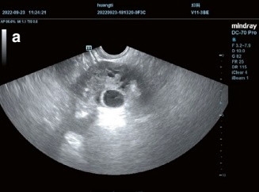
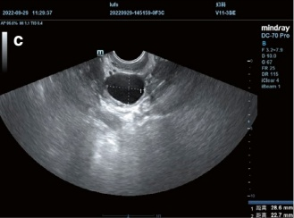
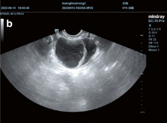
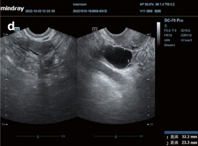
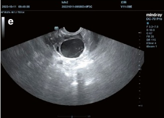
The mechanism is as follows:
Intramuscular injection of 5000 IU to 10,000 IU hCG stimulates a natural-like LH peak. A small dose of progesterone is essential for follicular rupture, which is why 5 mg of progesterone is supplemented by intramuscular injection when the
follicle reaches maturity. Dexamethasone reduces androgen secretion from the adrenal glands and improves the follicular microenvironment, increasing the follicle's responsiveness to gonadotropins. Therefore, patients with LUFS are given oral dexamethasone at a dose of 0.5 mg/day from the first day of menstruation until ovulation occurs [28].
It has been reported that transvaginal ultrasound-guided follicular puncture can mechanically rupture the follicle for ovulation while also decreasing blood androgen levels. This, in turn, alleviates the inhibition of follicular maturation by androgens [29]. Additionally, artificial insemination immediately following follicle puncture can increase the chances of conception in patients with LUFS. However, as an invasive procedure, follicular puncture may increase the risk of infection and bleeding and should be approached with caution in clinical practice.
Another proposed method is to localize the dominant follicle using transvaginal ultrasound, followed by external manipulation of the patient's abdomen to rupture the follicle using applied pressure. However, this approach may cause significant discomfort for the patient, and its safety and efficacy require further validation. In patients with recurrent LUFS, IVF-ET-assisted pregnancy (egg retrieval via direct puncture) may be considered. Some patients with LUFS may have functional defects in the follicular granulosa cells, leading to luteal insufficiency. In these cases, additional luteal support therapy is required after ovulation.
6. Small Follicle Ovulation and Atrophy
Small follicle ovulation, an abnormal type of ovulation, occurs due to insufficient secretion of pituitary gonadotropins or an early LH peak. This results in the follicle failing to develop and mature, leading to follicular atrophy or premature ovulation. In the small follicle ovulation cycle, the follicle diameter and growth rate are significantly smaller than in a normal cycle, with poor follicular development and cessation of growth at a certain point. Follicular maldevelopment leads to impaired fertilization capacity of the oocyte. Even if the oocyte is fertilized and implanted, the embryo's differentiation and development may be compromised, resulting in infertility or recurrent miscarriages [30]. The incidence of follicular maldevelopment in infertile patients has been reported to be between 16.5% and 29.6% [27].
There is no consensus on the diagnostic criteria for small follicle ovulation, although an average follicle diameter of $ \geq $18 mm is commonly used as a marker of follicular maturity in clinical practice. If a small follicle is found to ovulate during follicular monitoring, subsequent pregnancy should be avoided.
Ovulation induction therapy can increase pregnancy chances, improve pregnancy outcomes, and reduce the risk of spontaneous abortion in patients with small follicle ovulation. The clomiphene + HMG + hCG regimen for ovulation induction has been shown to improve pregnancy outcomes: clomiphene (which has an antiestrogenic effect and a long half-life) depletes a large number of estrogen receptors in the hypothalamus, reducing the sensitivity of hypothalamic gonadotropin-releasing hormone neurons to circulating estrogen. This results in a reduced or
absent LH peak, thereby preventing premature ovulation. HMG enhances follicle growth, making the follicle grow faster. However, clomiphene is associated with the risk of LUFS, and high-dose hCG is required to induce ovulation after the follicle matures.
4.2.2 Precautions for Ultrasonography in Ovulation Induction Cycles
The ultrasound images of follicle monitoring in ovulation induction and natural menstrual cycles are similarly characterized, but some handling differences exist. Ovulation induction therapy is initiated on the third to fifth day of the menstrual cycle, provided that the following ultrasonic characteristics are observed before starting treatment:
(a) Endometrial thickness <6 mm: The endometrium typically reduces to <6 mm by days 3–5 of menstruation. If the endometrial thickness is ≥6 mm, it should be inspected to exclude space-occupying or endometrial pathologies.
(b) Count the number of antral follicles and check for ovarian cysts: Blood estrogen and progesterone levels should be measured in the presence of persistent clear cyst(s) >1 cm. Very low levels of both estrogen and progesterone suggest a high probability of simple cysts. In such cases, ovulation induction drugs should be initiated only after the patient has been fully informed of the risks of cyst enlargement associated with the drugs and informed consent has been obtained. After two days, a repeat ultrasound and progesterone test should be performed in patients with luteal cysts ≥1 cm and blood progesterone ≥1.0 ng/mL. In most patients, the progesterone level will decrease. If not, the patient's progesterone level and luteal cyst should be monitored until the luteal cyst is absorbed before initiating ovulation induction treatment. For patients with solid or mixed ovarian cyst(s), ovulation induction should be canceled. The cyst should be monitored, and additional examinations should be conducted to exclude possible pathologies if the cyst persists.
(c) Antral follicle count: If the number of antral follicles in each ovary exceeds 8–10, it indicates the risk of OHSS and multiple pregnancies, warranting a reduction in the dosage of ovulation induction medication.
In a natural cycle, ovulation follows the onset of the LH surge. However, the definition of the onset of the LH surge has not reached a consensus. Common criteria for its onset include an increase of 1.8 to 6 times the baseline LH level, an increase of at least two or three standard deviations (SD) above the mean of preceding measurements, and an LH level reaching 30% of the amplitude of the LH surge. In a natural cycle, the median duration between the onset of the LH surge and ovulation is 33.9 h, ranging from 22 to 56 h. The ovulation occurred at 17.6 h, with a range of 16–24 h following the LH peak [31].
Ultrasound combined with blood hormone testing provides a more accurate prediction of ovulation timing. In a study involving 20 women, the detected LH peaks
ranged from 31 IU/L to 95 IU/L. Based on our clinic’s experience, the highest LH peak observed during ovulation exceeded 200 IU/L. Changes in progesterone levels can be used as a reference to determine whether an elevated LH value occurs before or after the LH peak. For example, if the follicle diameter is 18 mm, with blood test results showing E2 200 pg/mL, LH 18 IU/L, and P 0.6 ng/mL, the very low progesterone level indicates that LH is in the early ascending phase, and ovulation is expected to occur within the next 24 to 48 h. However, if the progesterone level, in this case, is 1.7 ng/mL, this elevated progesterone level suggests that the granulosa cells of the dominant follicle have begun to luteinize and secrete progesterone in response to the LH peak. The elevated LH value at this point indicates that LH has peaked and is now falling, signaling ovulation within the next 24 h.
The timing of hCG administration in an ovulation induction cycle must be carefully determined based on follicular development. Premature administration of hCG can lead to follicular atresia, while delayed administration can cause follicular over-aging and difficulties in ovulation. Ovulation can be induced by administering hCG when the dominant follicle is $ \geq $18 mm in diameter and the blood estrogen level corresponds to the number of follicles. The serum estrogen level should be between 180 pg/mL and 250 pg/mL per mature follicle. After hCG administration, ovulation typically occurs 30 to 40 h later.
4.2.3 Precautions for Follicle Measurement in Controlled Ovarian Hyperstimulation Cycles
In patients undergoing IVF-ET, COH is used to maximize the number of oocytes retrieved, thereby increasing the chances of obtaining euploid embryos. However, follicle measurement in COH cycles is more challenging than in ovulation induction and natural cycles. The simultaneous growth of multiple follicles causes them to compress against each other, resulting in an irregular three-dimensional follicular pattern on ultrasonography. The most accurate approach is to measure follicular volume. However, the current measurement of follicular volume by 3D ultrasound has multiple limitations and is not widely available in clinical practice.
The standard method for measuring follicle size is to take the two mutually perpendicular diameters of the largest section of the follicle. The first challenge for irregularly shaped follicular sections is selecting the appropriate diameters for measurement. The commonly used area estimation method involves choosing two perpendicular diameters that best represent the area of the section (e.g., the length and width for a square-shaped section, the midline of both sides for a triangle- or trapezoid-shaped section). Caution should be exercised to avoid using diagonal lines for measurements, as this would inevitably increase the area results.
However, the question arises: Can the maximum sectional area of an irregular 3D object accurately represent its true size? The answer is no. When compressed, the maximum cross-sectional area of an elastic spherical object is always greater than in its natural state. When multiple follicles develop simultaneously and compress each other during ovulation hyperstimulation, the measured maximum section size
of a squeezed follicle is inevitably larger than its true size. This represents the second challenge of follicle measurement during COH: selecting a representative cross-section.
Measurements of follicles with highly irregular spatial structures are bound to vary between operators. Some operators follow the principle of measuring the maximum sectional area, while others choose a representative section rather than the largest one for measurement. Unfortunately, no standardized norms or principles exist for measuring such irregular follicles. In clinical practice, measurement errors can be minimized when follicle monitoring is performed by the same operator, using the same ultrasound system, and adhering to consistent measurement standards.
The maturity of the follicle is not determined solely by the absolute value of the measured follicle size but also by daily fluctuations in blood hormone levels during the late follicular phase and the day-to-day changes in follicle size.
4.3 Ultrasound in Assisted Reproductive Procedures
ART includes IVF-ET and its derivatives, as well as IUI. Surgeries and procedures involved in ART include transvaginal ultrasound-guided oocyte retrieval, transabdominal ultrasound-guided embryo transfer, and artificial insemination with either the husband's sperm or donor sperm. Ultrasound monitoring plays a crucial role throughout assisted reproductive treatments. In this section, we will discuss the surgical procedures related to assisted reproductive technology.
4.3.1 Follicle Monitoring and Timing of Operation in IUI
IUI is an assisted reproductive technique in which semen is processed in vitro via density gradient centrifugation, followed by the injection of screened, highly viable sperm into the uterine cavity of the woman during her ovulation period using a catheter (Fig. 4.12). It is widely used for indications including oligozoospermia, asthenospermia, and sexual dysfunction in male partners, as well as unexplained infertility, cervical factor infertility, endometriosis, polycystic ovary syndrome, and ovarian dysfunction in women. Preoperative tubal patency testing (at least one fallopian tube must be patent) is required in all cases. However, the pregnancy success rate of IUI, influenced by various factors, remains relatively low (between 8% and 22%) [32]. Effective ovulation monitoring and the precise timing of insemination are critical to the success of IUI.
The follicle monitoring protocol in an IUI cycle can be the same as follicle monitoring in a natural cycle or an ovulation induction cycle. Several studies have evidenced that the ovulation induction cycle improves the pregnancy rate in IUI [33]. IUI with multiple developing follicles has a higher pregnancy success rate than with only one follicle but raises the risk of ovarian overstimulation and multiple pregnancies. For patients with ovulation disorders or failure to conceive after natural cycle
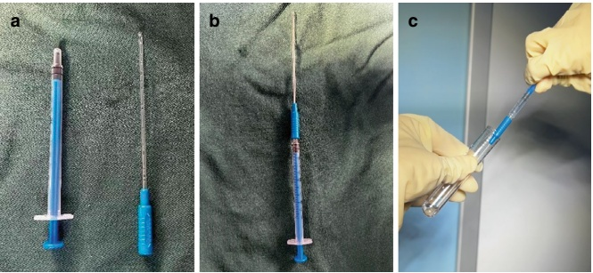
IUI treatment, a mild ovulation induction regimen may be indicated, with the use of ovulation induction medications following the principle of stepwise increase in small dosages. The current treatment cycle should be aborted when more than three follicles have developed to prevent multiple pregnancies and ovarian hyperstimulation syndrome.
Concerning the choice of the number and timing of insemination, theoretically, dual IUIs (before and after ovulation) should have a higher pregnancy success rate than single IUI. This is because dual IUIs allow a certain number of motile sperm to be retained in the female uterine cavity during ovulation, increasing the chances of egg fertilization. However, most studies have shown that increasing the number of IUIs does not translate into an increase in successful pregnancy rates, with no statistically significant difference in pregnancy rates between dual insemination performed before and after ovulation and single insemination after ovulation [34]. In an ovulation induction cycle, IUI performed between 24 and 40 h after hCG administration yields the same pregnancy rate [35]. In natural cycles, the IUI procedure can be scheduled 24 h after the spontaneous LH rise [36].
In women with the uterus in an extremely anteverted or retroverted position, intrauterine intubation may be very challenging. In such cases, the patient should be instructed to relax and have a full bladder, which may reduce the cervical-uterine angle, or intubation may be attempted by pulling the cervix downward with cervical forceps. Alternatively, for patients struggling with IUI intubation, transabdominal ultrasound can be used to guide the direction of the intubation.
4.3.2 Transvaginal Ultrasound-Guided Egg Retrieval
Egg (oocyte) retrieval is a critical component of assisted reproductive procedures performed following COH. Historically, egg retrieval methods such as cesarean section, transabdominal laparoscopy, and transabdominal ultrasound-guided techniques were complex, posed significant challenges in egg collection, and caused considerable physical discomfort and pain for patients.
Transvaginal ultrasound, by positioning the transducer closer to the uterus, ovaries, and pelvic blood vessels, offers superior visualization of the pelvic organs and vasculature compared to transabdominal ultrasound. Consequently, transvaginal ultrasound-guided puncture and aspiration have become the standard method for egg retrieval.
In this procedure, a puncture needle connected to a negative-pressure suction device is secured to a transvaginal ultrasound transducer with a needle guide. The ultrasound accurately identifies the follicle's position, and follicular contents are aspirated through the puncture to retrieve the egg. This method achieves an egg acquisition rate of 80% to 90%.
This simple, convenient, safe, and minimally invasive technique enables continuous egg retrieval over multiple cycles, thereby improving the cumulative pregnancy rate for patients undergoing IVF.
1. Preparations before egg retrieval
(a) Preoperative preparation of the patient
The patient should undergo functional assessments of vital systems, including blood group typing, complete blood count, coagulation profile, liver and renal function tests, electrocardiogram (ECG), and chest X-ray. Screening for infectious and sexually transmitted diseases (STDs), such as acquired immunodeficiency syndrome (AIDS), vaginitis, chlamydia, and gonococcal infections, is also essential.
Prior to the procedure, the patient should receive a thorough explanation of the process to foster positive cooperation and alleviate anxiety and nervousness. In order to minimize the risk of retrograde infections associated with egg retrieval, the patient's vagina should be disinfected using a sodium chloride solution or a 0.5% povidone-iodine solution on the day of hCG administration and the following day.
Fasting protocols must be strictly followed for patients scheduled for general anesthesia. No food or fluids should be consumed after midnight on the night before the operation. On the day of the egg retrieval, the patient should remain fasting until the procedure is completed.
(b) Instrument preparation
The consumables required for the procedure include a 17 G or 18 G single- or double-lumen egg retrieval needle, test tubes, and a buffer or culture medium containing heparin and HEPES (4-(2-hydroxyethyl)-1-piperazineethanesulfonic acid). A thermostat container should be prepared in advance to hold test tubes during the procedure.
The connection of the negative pressure suction device must be verified to ensure it is secure and that the negative pressure is consistently maintained at 16 kPa (120 mmHg). A vaginal ultrasound transducer with a frequency of 5 kHz to 7.5 kHz should be disinfected by wiping it with saline.
After disinfection, a coupling agent is applied to the transducer, which is then enclosed in a sterile glove and a long plastic cover for the transducer's connecting cable. Subsequently, the puncture holder is mounted (Fig. 4.13).
2. Egg retrieval procedure
(a) Egg retrieval is performed 34–36 h after hCG administration.
(b) After verifying the patient's identity, the patient is placed in the lithotomy position, connected to a monitor, anesthetized, and intravenous access is established.
(c) The surgeon washes and sterilizes their hands, dons a surgical gown and sterile gloves, and ensures that their hands do not come into contact with the puncture needle or any instruments that may come into contact with the follicular fluid.
(d) After rinsing the vulva with saline, a sterile surgical hole towel is laid in place. The vagina is rinsed with saline until it is clean. For patients with vaginal infections, the vagina should first be disinfected with a 0.5% povidone-iodine solution, followed by multiple saline rinses to remove any iodine residue and prevent contamination of the aspirated follicular fluid.
(e) The ultrasound transducer fitted with a needle guide is inserted into the vagina. The surgeon observes the position of the uterus and bilateral ovaries, evaluates the accessibility of the ovaries, counts the follicles to be punctured, plans the intended needle insertion route, and assesses its relationship to the pelvic organs and blood vessels.
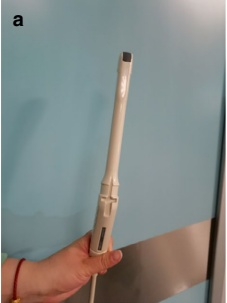
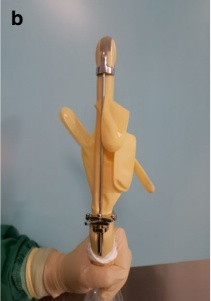
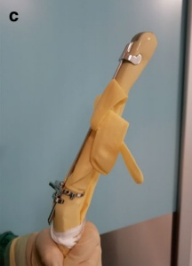
(f) Rinse the egg retrieval needle with a buffer or culture medium containing heparin and HEPES, ensuring the negative pressure system is functioning correctly, then discard the rinsing solution. Select the follicle closest to the vaginal wall for aspiration. Insert the puncture needle into the largest section of the follicle, ensuring the route avoids the vaginal blood vessels, cervix, bladder, pelvic blood vessels, and intestinal canal.
If the ovary is positioned high, an assistant may apply gentle pressure to the patient's abdomen to move the ovary closer to the ultrasound transducer. If the needle must pass through the uterus, avoid puncturing the endometrium as much as possible. Once the needle tip enters the follicle, initiate the negative pressure to aspirate the follicular fluid, fine-tuning the ultrasound transducer and slightly rotating the needle to keep its tip centered in the follicle during aspiration. Continue aspirating until the follicular fluid is completely drained and the follicular wall collapses. Rotate the needle again to gently scrape the follicular wall to ensure complete extraction of the follicular contents.
For patients with a small number of follicles, a double-lumen needle can be used to rinse the follicular cavity with culture medium after initial aspiration to increase egg retrieval yield. Test tubes containing the follicular fluid should always be stored in a thermostat container and immediately handed to the IVF laboratory technician to isolate the oocyte-corona-cumulus complexes, minimizing the risk of oocyte quality degradation due to prolonged in vitro storage.
(g) Follicles located along the same puncture route should be aspirated sequentially, from proximal to distal. Care must be taken to distinguish pelvic vascular cross-sections from follicles in the same plane. Vascular cross-sections, which may appear as ultrasound echoes similar to follicles, will transform into long tubular shapes when the ultrasound transducer is slightly rotated, preventing them from being mistaken for follicles.
After aspirating all follicles along one puncture route, retract the needle to the ovary's surface (without fully withdrawing it) while avoiding scratching the ovarian surface with the needle tip. Then, select a new puncture route to aspirate the remaining follicles sequentially. In most cases, all follicles in one ovary can be aspirated with a single puncture.
Once the puncture needle is removed from the body, it should be rinsed again with a heparin and HEPES-containing buffer or culture medium to clear any adherent oocyte-corona-cumulus complexes.
(h) Perform egg retrieval from the other ovary in the same manner. Once egg retrieval from both ovaries is complete, monitor for any signs of bleeding from the pelvic organs, including the uterus, ovaries, bladder, and retroperitoneum, as well as for active bleeding in the vagina.
In cases of active pelvic bleeding, hemostatic drugs may be administered intramuscularly to control the bleeding. For vaginal bleeding, the bleeding site can be clamped using cervical forceps, or gauze can be inserted into the
vagina to apply pressure. The gauze should be removed after a few hours (Figs. 4.14 and 4.15).
(i) After egg retrieval, the patient should be monitored for 2 h. Her vital signs must be stable, and she should not experience any discomfort before being discharged from the clinic.
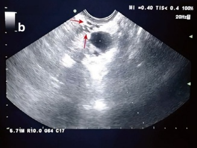
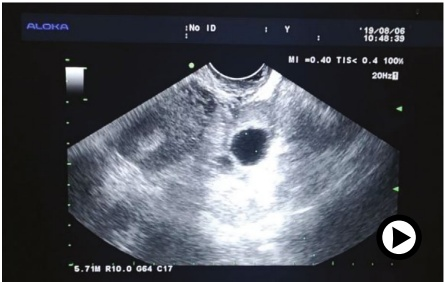